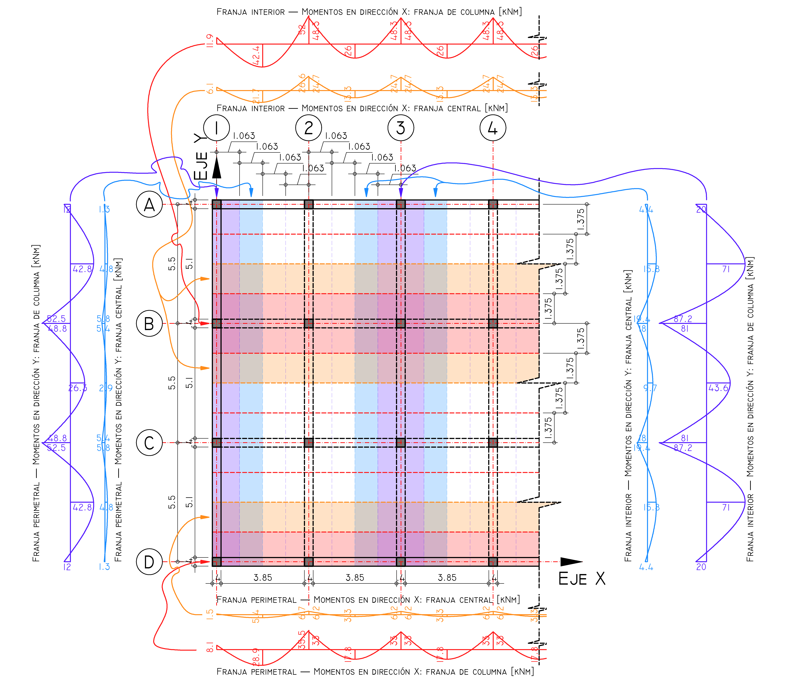
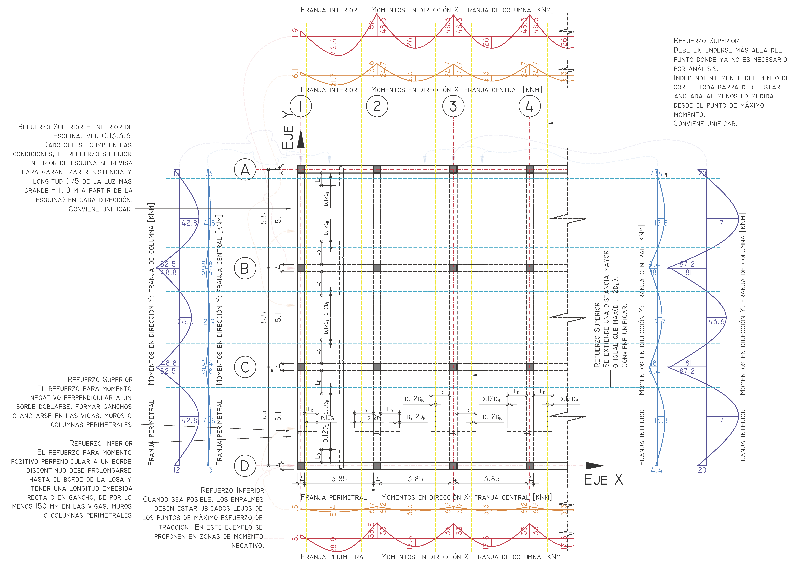
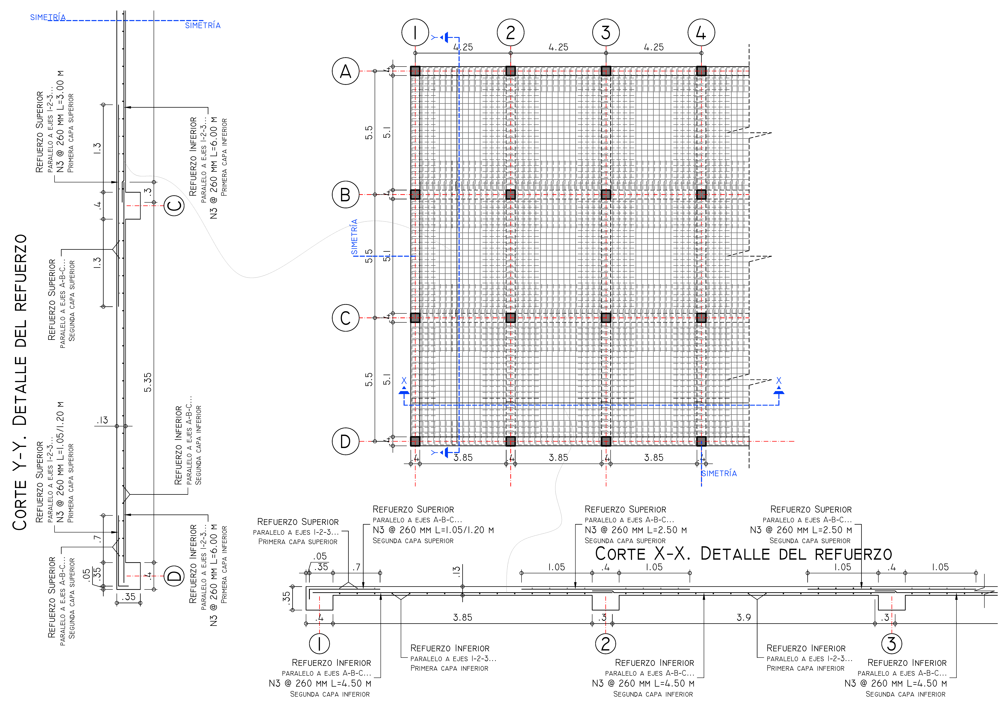

Aprender haciendo. Comprender antes de detallar.
Diseño de Losa Maciza en Dos Direcciones
🧭 BRÚJULA — ¿Qué estamos diseñando?
El objetivo no es obtener un diagrama bonito ni completar una serie de ecuaciones.
Estamos diseñando una losa de concreto reforzado en dos direcciones hasta convertir una geometría, unas cargas y unas condiciones de apoyo en algo que pueda construirse. El recorrido es este:
| Pregunta | Lo que necesitamos obtener |
|---|---|
| ¿Qué losa tengo? | Geometría, luces, apoyos y condiciones de aplicación |
| ¿Qué espesor necesito? | Rigidez, control de deflexiones y resistencia |
| ¿Qué cargas recibe? | \(w_u\) y combinaciones de diseño |
| ¿Cuánto momento debe resistir? | \(M_u\) |
| ¿Cuánto acero necesita? | \(A_s\) |
| ¿Resiste el cortante? | \(\phi V_c \ge V_u\) |
| ¿Cómo coloco ese acero? | Separaciones, desarrollo, anclaje, traslapos e interrupciones |
| ¿Qué termina llegando a la obra? | El despiece |
¿QUÉ ESPESOR NECESITO?
FLEXIÓN ─────────────── CORTANTE
¿CUÁNTO MOMENTO? ¿CUÁNTO \(V_u\)?
¿CUÁNTO ACERO? \(\phi V_c \ge V_u\)
DETALLAMIENTO
TRASLAPOS · DESARROLLO · ANCLAJE · SEPARACIONES
DESPIECE
OBRA
Todo lo que ocurre entre la geometría y el despiece existe para poder llegar a esas verificaciones y convertirlas en acero que realmente pueda construirse.
> El Método de Diseño Directo es el camino que utilizaremos para obtener \(M_u\). No es el objetivo final.
Una vez obtenido el momento, el problema vuelve a ser el de siempre:
El resultado final no es \(M_u\). \(M_u\) es solamente una etapa. El resultado final es una losa con: espesor + resistencia + acero + anclajes + traslapos + separaciones + despiece.
Por eso, si en algún momento el procedimiento parece demasiado abstracto, vuelve aquí: estamos tratando de construir una losa que resista y pueda detallarse, porque el cálculo que no puede convertirse en una disposición constructiva todavía no ha terminado.
> En algunos puntos del ejemplo utilizaremos un modelo de elementos finitos como herramienta de contraste.
No vamos a diseñar la losa "para que coincida con SAP/ETABS". El modelo FEM responde a otra pregunta: ¿Cómo se distribuye espacialmente la respuesta cuando representamos explícitamente la losa, las vigas y los apoyos?
- El método manual nos permite entender y diseñar.
- El FEM nos permite observar y contrastar.
Si ambos entregan exactamente el mismo diagrama, probablemente no estamos entendiendo qué representa cada modelo. Si vemos diferencias radicales, debemos auditar qué estamos leyendo (¿Mismo ancho de franja? ¿Misma sección? ¿Momento de diseño vs resultante local? ¿La viga absorbió la respuesta?).
Índice de Contenido
1. Geometría General y Planta
Configuración del sistema de entrepiso. NSR-10 Capítulo C.13

Figura 1: Planta de distribución de paneles (6 en X, 3 en Y) con vigas de pórtico.
El sistema estructural se compone de paneles rectangulares apoyados sobre vigas perimetrales e interiores. Para el análisis, se define la orientación según la convención del proyecto:
Paralela a los Ejes Alfabéticos (A, B, C...)
Paralela a los Ejes Numéricos (1, 2, 3...)
Luz libre \( L_n \): 3.85 m
Luz libre \( L_n \): 5.10 m
La relación de aspecto se verifica con distancias a ejes de apoyos:
- Luces entre ejes en X: 4.25 m.
- Luces entre ejes en Y: 5.50 m.
✅ Relación de Aspecto: \( 5.50 / 4.25 = 1.29 \leq 2.0 \).
El sistema se analiza como Losa en Dos Direcciones.
2. Rigidez Relativa de Vigas (\(\alpha_f = \frac{E_{cb} I_b}{E_{cs} I_s}\))
Análisis detallado y predimensionamiento. NSR-10 C.9.5.3 y C.13.6.1.6
Para aplicar el procedimiento y verificar las condiciones de rigidez del sistema, debemos calcular la rigidez relativa \(\alpha_f\) de las vigas que participan en los paneles considerados. La rigidez \(\alpha_f\) relaciona la inercia de la viga (\(I_b\)) con la inercia de la franja de losa (\(I_s\)) limitada lateralmente por los ejes centrales (Ver NSR-10 C.13.2.4).
| Viga | Inercia \( I_b \) (\(\text{m}^4\)) |
|---|---|
| En el borde (400 mm x 350 mm) | \( 1.7568 \times 10^{-3} \) |
| Interna (400 mm x 350 mm) | \( 2.0011 \times 10^{-3} \) |

Figura 2: Secciones de viga y losa para diferentes paneles.
La inercia de la losa depende del ancho tributario medido perpendicular a la viga; por ejemplo:
- Apoyos Exteriores: Desde el extremo de la viga de borde (\(b_v/2\)) hasta el centro del panel (\(L/2\)).
- Apoyos Interiores: Entre los centros de los dos paneles adyacentes (\(L_{izq}/2 + L_{der}/2\)).
| Ubicación de Viga | Ancho Losa (\(b\)) | Inercia Losa (\(I_s\)) | \(\alpha_f\) Calc. |
|---|---|---|---|
| Dir. Y - Exterior | \( 2.325 \text{ m} \) | \( 4.2567 \times 10^{-4} \) | 4.13 |
| Dir. Y - Interior | \( 4.25 \text{ m} \) | \( 7.7810 \times 10^{-4} \) | 2.57 |
| Dir. X - Exterior | \( 2.95 \text{ m} \) | \( 5.4010 \times 10^{-4} \) | 3.25 |
| Dir. X - Interior | \( 5.50 \text{ m} \) | \( 1.0070 \times 10^{-3} \) | 1.99 |
Criterio: \(\alpha_{fm} > 2.0\). El sistema se encuentra en el rango de rigidez de vigas utilizado por la expresión C.9-13.
Nota: el valor de \(\alpha_{fm}\) se calculó para el panel esquinero (\(\alpha_{fm} = 2.98\)). Sin embargo, para un panel interior se obtiene \(\alpha_{fm} \approx 2.28\), también mayor a 2.0, por lo que en ambos casos las vigas dominan la rigidez del sistema.
Para el análisis en dirección Y se mantiene constante la sección de la viga longitudinal considerada y, por tanto, el valor de \(I_b\) de esa viga a lo largo del eje. La inercia \(I_s\), en cambio, depende del ancho de losa asociado a la viga según su ubicación —perimetral o interior—. Por ello, los valores de \(\alpha_f\) utilizados en cada condición se obtienen de forma independiente. En el modelo conceptual se considera la viga longitudinal como una sección T con la porción de losa definida por C.13.2.4 cuando corresponde.
Predimensionamiento (NSR-10 C.9.5.3.3)
Para este sistema con \(\alpha_{fm} > 2.0\), validamos el espesor mínimo \(h\) considerando la mayor luz libre \(l_n\) del panel y su relación de aspecto \(\beta\):
\[ h = \frac{l_n \left( 0.8 + \frac{f_y}{1400} \right)}{36 + 9\beta} \ge 90 \text{ mm} \]
\[ \beta = \frac{5.10}{3.85} = 1.3247 \]
\[ l_n = 5.10 \text{ m} \]
\(h = 130\,\text{mm}\) supera el espesor mínimo obtenido mediante C.9.5.3.3 para las condiciones de este sistema. Por tanto, el control de deflexiones se aborda mediante el criterio de espesor mínimo adoptado por la norma. Si las condiciones del proyecto requirieran un espesor menor o existieran condiciones particulares de carga, apoyo o elementos no estructurales, deberá realizarse una verificación explícita de deflexiones.
Notas Técnicas de Obra:
- El espesor final debe validarse durante el diseño por flexión y cortante.
- Agregado Grueso: Se recomienda un tamaño máximo nominal de 5/8" para garantizar el correcto flujo del concreto en un espesor de 130 mm (Ver requisitos de espaciamiento en NSR-10 C.3.3).
3. Requisitos para el Método Directo
Validación de limitaciones según NSR-10 C.13.6.1
Para aplicar este método simplificado, el proyecto debe cumplir simultáneamente con los siguientes 6 requisitos:
- ✓ C.13.6.1.1 Mínimo 3 vanos: Contamos con 6 vanos en X y 3 en Y.
- ✓ C.13.6.1.2 Relación de aspecto: \( 5.50 / 4.25 = 1.29 \leq 2.0 \).
- ✓ C.13.6.1.3 Variación de luces: Las luces contiguas no difieren en más de 1/3 de la mayor. En X: \( 4.25/4.25 = 1.00 < 1.33 \). En Y: \( 5.50/5.50 = 1.00 < 1.33 \).
- ✓ C.13.6.1.4 Desalineamiento de columnas: Máximo 10% de la luz. Desviación máx: 0.00 m. Límite: \( 0.10 \times 5.50 = 0.55 \text{ m} \).
- ✓ C.13.6.1.5 Cargas: Gravitacionales uniformes. Carga viva (\( 3.8 \text{ kN/m}^2 \)) \( \leq 2 \times \) Carga muerta (\( 4.12 \text{ kN/m}^2 \)).
Debe cumplirse: \( 0.2 \leq \frac{\alpha_{f1} L_2^2}{\alpha_{f2} L_1^2} \leq 5.0 \)
Tomando valores promedio para el panel en Y:
- \( \alpha_{f1} \text{ (prom Y)} = (2.57 + 2.57) / 2 = 2.57 \)
- \( \alpha_{f2} \text{ (prom X)} = (1.99 + 1.99) / 2 = 1.99 \)
4. Análisis de Cargas y \( M_0 \)
Carga última mayorada y Momento Estático Total (C.13.6.2)
Definición de Cargas (Peso propio y Datos del Problema):
- Peso Propio (D): \( 24 \, \text{kN/m}^3 \times 0.13 \, \text{m} = 3.12 \, \text{kN/m}^2 \)
- Carga Muerta Sobreimpuesta (sD): \( 1.0 \, \text{kN/m}^2 \)
- Carga Viva (L): \( 3.8 \, \text{kN/m}^2 \)
Cálculo del Momento Estático Mayorado \( M_0 \) en la dirección Y (Franja Típica):
Nota sobre \( L_2 \): Corresponde al ancho tributario total del panel (perpendicular a la dirección de análisis), medido entre ejes de apoyo. Para paneles de borde, se mide desde el extremo de la losa hasta el eje central del panel (NSR-10 C.13.6.2.4).
5. Distribución de Momentos — Dirección Y
Análisis de Franjas según NSR-10 C.13.6.4
A. Franja Interior — Panel Exterior en Y: \( L_1 = 5.50 \text{ m}, L_2 = 4.25 \text{ m} \)
Calculamos los momentos estáticos mayorados (C.13.6.3.3) usando los factores para losa con vigas entre apoyos (Caso 2):
106.63 kNm
86.83 kNm
24.37 kNm
| Momento Mayorado | Factor F.C. | Franja Columna (Total) | Franja Col. (SLAB 15%) | Franja Central |
|---|---|---|---|---|
| Negativo Interior | 81.8% | 87.24 kNm | 13.09 kNm | 19.39 kNm |
| Positivo | 81.8% | 71.04 kNm | 10.66 kNm | 15.79 kNm |
| Negativo Exterior | 82.0% | 20.00 kNm | 3.00 kNm | 4.38 kNm |
Para distribuir el momento negativo exterior en Y, calculamos la rigidez de la viga transversal (en X) que "sujeta" el borde de la losa:
- \( C = 2.666 \times 10^9 \text{ mm}^4 \) (Propiedad torsional de la viga en X).
- \( I_s = 5.401 \times 10^8 \text{ mm}^4 \) (Inercia de losa perpendicular a la viga en X).
- \( \beta_t = \frac{E_{cb} C}{2 E_{cs} I_s} = 2.47 \)
B. Franja Interior — Panel Interior en Y
Para paneles internos, el Momento Estático Total \(M_o\) se distribuye con factores fijos (NSR-10 C.13.6.3.2):
99.01 kNm
53.31 kNm
| Tipo de Momento (Interior) | Factor F.C. | Franja Columna (Total) | Franja Col. (SLAB 15%) | Franja Central |
|---|---|---|---|---|
| Negativo Mayorado | 81.8% | 81.01 kNm | 12.15 kNm | 18.00 kNm |
| Positivo Mayorado | 81.8% | 43.62 kNm | 6.54 kNm | 9.69 kNm |
💡 ¿Qué significa el 85/15?
Cuando \(\alpha_{f1}l_2/l_1\ge1.0\), la NSR-10 C.13.6.5.1 exige que las vigas entre apoyos se diseñen para resistir el 85 % de los momentos de la franja de columna. La porción de losa localizada en la franja de columna debe resistir la parte restante, de acuerdo con C.13.6.4.5.
En este ejemplo, por tanto:
La franja de columna incluye la viga. El 85/15 representa una distribución de momento entre la viga y la porción de losa de la franja; no una división geométrica de la franja.
| Componente | Momento de diseño |
|---|---|
| Viga | \(0.85M_{\mathrm{FC}}\) |
| Losa de la franja de columna | \(0.15M_{\mathrm{FC}}\) |
| Franja central | \(M_{\mathrm{restante}}\) |
La distribución 85/15 es entre SISTEMAS, no entre anchos
La franja de columna sigue siendo una franja completa, con ancho \( b_{\text{franja}} = \frac{L_2}{2} \) (típicamente). Esa franja contiene una viga (si la hay) y losa a ambos lados de la viga. Toda esa zona trabaja en conjunto. El 85/15 es una partición de responsabilidad estructural, no geométrica.
¿Sobre qué ancho diseño el 15% de la losa?
Usas el ancho completo de la franja de columna. No restas el ancho de la viga ni el ancho efectivo de la T. Ese 15% ya está asignado a la losa como sistema, y la losa ocupa todo el ancho de la franja. Para este ejemplo, el momento por metro lineal se obtiene distribuyendo el 15% sobre el ancho completo de la franja de diseño.
¿Y el ancho efectivo de la T?
El ancho efectivo de la viga T es un concepto diferente. Se usa para diseñar la viga (calcular su resistencia a flexión considerando que la losa participa), pero no se usa para restar de la losa al calcular el refuerzo correspondiente al 15%.
Modelo FEM vs MDD
El FEM muestra una distribución continua de momentos alrededor de la viga. La regla 85/15 del MDD simplifica esa distribución en dos valores discretos: uno para la viga y uno para la losa. Ambos enfoques son válidos, pero responden a preguntas diferentes. El MDD proporciona una regla de distribución calibrada para sistemas típicos; el FEM representa la respuesta del sistema considerando explícitamente la rigidez de todos los elementos.
Memoria Adicional: Cuadro Completo de Franjas (X e Y)
Desglose de cálculo para franjas interiores y perimetrales en ambas direcciones (X e Y), integrando la regla de distribución del 15% a la losa.
| Variable | Franja Perim. Y | Franja Interior Y | Franja Perim. X | Franja Interior X |
|---|---|---|---|---|
| $L_n$ (m) | 5.10 | 5.10 | 3.85 | 3.85 |
| $L_2$ (m) | 2.33 | 4.25 | 2.95 | 5.50 |
| Momento Estático Mayorado $M_0$ (kNm) | ||||
| $M_0$ | 83.33 | 152.33 | 60.25 | 112.34 |
| Momentos en Franja de Columna (SÓLO LOSA 15%) (kNm) | ||||
| Negativo Interior | 7.87 | 13.09 | 5.33 | 7.81 |
| Negativo Exterior | 1.80 | 3.00 | 1.22 | 1.78 |
| Positivo | 6.41 | 10.66 | 4.34 | 6.36 |
| Interior Negativo | 7.31 | 12.15 | 4.95 | 7.25 |
| Interior Positivo | 3.94 | 6.54 | 2.66 | 3.90 |
| Momentos en Franja Central (100%) (kNm) | ||||
| Negativo Interior | 5.83 | 19.39 | 6.67 | 26.60 |
| Negativo Exterior | 1.32 | 4.38 | 1.53 | 6.08 |
| Positivo | 4.75 | 15.79 | 5.43 | 21.66 |
| Interior Negativo | 5.42 | 18.00 | 6.20 | 24.70 |
| Interior Positivo | 2.92 | 9.69 | 3.34 | 13.30 |
C. Mapa de Momentos de Diseño

Figura 3: Diagrama de Momentos en Planta: Franja de Columna y Central Interior (Eje Y).
Momento Crítico Diseño Losa: 13.09 kNm
Momento Crítico Diseño Losa: 19.39 kNm

Figura 4: Distribución de Momentos M22 para Cálculo de Refuerzo en Franjas (Eje Y). Modelo de elementos finitos. Rango (-20 kNm/m, +10 kNm/m).

Figura 5: Diagrama de Momentos de Losa Método Directo (Eje X e Y). Se incluye franja perimetral e interior.
6. Especificaciones de Refuerzo y Límites
Parámetros: \(f'_c = 28 \text{ MPa}\) | \(f_y = 420 \text{ MPa}\) | \(d_{Y} = 105.24 \text{ mm}\) | \(d_{X} = 95.71 \text{ mm}\)
\( A_{s,min} = 0.0018 \cdot 1000 \cdot 130 = 234 \text{ mm}^2/\text{m} \)
\( s_{max,\rho} = \frac{71.3 \cdot 1000}{234} = \mathbf{304 \text{ mm}} \)
Diseño de Refuerzo: Franja de Columna Interior Y (Ancho = 2.125 m) (Barra No. 3)
| Ubicación / Momento | \(M_u\) Losa (kNm) | \(A_s\) req Total (\(\text{mm}^2\)) | \(s\) Suministrada (Límite 2h) |
|---|---|---|---|
| Negativo Interior | 13.09 | 333.4 | 260 mm |
| Negativo Exterior | 3.00 | 75.6 | 260 mm |
| Positivo | 10.66 | 270.8 | 260 mm |
| Interior Negativo | 12.15 | 309.2 | 260 mm |
| Interior Positivo | 6.54 | 165.6 | 260 mm |
Diseño de Refuerzo: Franja Central Interior Y (Ancho = 2.125 m) (Barra No. 3)
| Ubicación / Momento | \(M_u\) (kNm) | \(A_s\) req Total (\(\text{mm}^2\)) | \(s\) Suministrada (Límite 2h) |
|---|---|---|---|
| Negativo Interior | 19.39 | 497.1 | 260 mm |
| Negativo Exterior | 4.38 | 110.5 | 260 mm |
| Positivo | 15.79 | 403.3 | 260 mm |
| Interior Negativo | 18.00 | 460.9 | 260 mm |
| Interior Positivo | 9.69 | 246.1 | 260 mm |
El área de acero requerida se basa en la ecuación de equilibrio:
7. Verificación de Cortante (\(V_u\))
Protocolo NSR-10 para Losas con Vigas Rígidas (\(\alpha_1 L_2 / L_1 > 1\))
A. Cortante como Viga Ancha (1D)
Carga de Diseño:
Franja unitaria de losa (\(b = 1.0 \text{ m}\)):
\( w_u = 11.02 \, \text{kN/m}^2 \Rightarrow 11.02 \, \text{kN/m} \)
Cortante actuante:
\( V_u = \frac{w_u L}{2} = \frac{11.02 \cdot 5.50}{2} = 30.3 \, \text{kN} \)
\( V_u(d) = 30.3 - (11.02 \cdot (0.2 + 0.1052)) = \mathbf{26.9 \, \text{kN}} \)
B. Cortante Bidireccional (2D / Punzonamiento) - Columna interior
- Columna: \(400 \times 400 \text{ mm}\) (\(\beta = 1.0\))
- Peralte (\(d\)): \(105.24 \text{ mm}\)
- Perímetro (\(b_o\)): \(4 \cdot (c + d) = \mathbf{2.021 \text{ m}}\)
- Área Crítica (\(A_c\)): \((c+d)^2 = \mathbf{0.255 \text{ m}^2}\)
Restando el área dentro del perímetro crítico:
\( V_u = \mathbf{254.8 \text{ kN}} \)
Evaluación de las tres condiciones de la NSR-10 C.11.11.2.1:
(b) \( \phi 0.083 \left(\frac{40 \cdot 105.24}{2021} + 2\right) \sqrt{28} \cdot b_o d = \mathbf{287.7 \text{ kN}} \)
(c) \( \phi 0.33 \sqrt{28} \cdot b_o \cdot d = \mathbf{278.5 \text{ kN}} \) (Controla)
En este ejemplo se verifica explícitamente el punzonamiento como una comprobación conservadora de la losa alrededor de la columna. La presencia de vigas modifica la distribución de rigidez y de fuerzas del sistema, pero no permite omitir automáticamente la verificación de cortante de la losa. La respuesta real del sistema puede distribuir parte importante de las fuerzas hacia las vigas; sin embargo, esa redistribución debe demostrarse mediante el modelo estructural correspondiente y no asumirse únicamente por la presencia de una viga.
8. Detallamiento de Refuerzo y Traslapos
Longitudes de desarrollo, cortes y ganchos según NSR-10 C.12 y C.13.3
A. Longitudes de Desarrollo (\(l_d\)) y Traslapos
| Barra | \(d_b\) (mm) | \(\frac{c_b+K_{tr}}{d_b}\) | \(l_d\) Tracción (cm) | Clase A (cm) | Clase B (cm) | Compresión (cm) |
|---|---|---|---|---|---|---|
| N° 3 (Proyecto) | 9.5 | 2.50* | 30.0 | 30.0 | 30.0 | 30.0 |
| N° 4 | 12.7 | 2.07 | 35.3 | 35.3 | 45.9 | 37.9 |
| N° 5 | 15.9 | 1.76 | 52.1 | 52.1 | 67.7 | 47.4 |
| N° 6 | 19.1 | 1.55 | 71.0 | 71.0 | 92.2 | 56.8 |
| N° 7 | 22.2 | 1.40 | 114.6 | 114.6 | 149.0 | 66.3 |
| N° 8 | 25.4 | 1.29 | 142.4 | 142.4 | 185.1 | 75.7 |
El cálculo analítico mediante C.12.2.3 arroja un \(l_d = 211.5 \text{ mm}\) y una longitud teórica de traslapo de \(274.9 \text{ mm}\). Sin embargo, la NSR-10 exige un mínimo normativo de 300 mm para longitudes de desarrollo y empalmes a tracción (C.12.2.4). Por ello, los valores definitivos de diseño se adoptan en 30 cm.
B. Reglas de Corte e Interrupción del Refuerzo (NSR-10 C.12.10)
Cuando se despieza, el refuerzo debe extenderse más allá del punto donde ya no es necesario por cálculo analítico, una distancia igual al mayor entre el peralte efectivo (\(d\)) o \(12d_b\). Para nuestra barra N° 3, rige el peralte, pero el mínimo normativo por diámetro es \(12d_b = 114.3 \text{ mm}\).
Independientemente del punto de corte, toda barra debe estar anclada al menos una longitud \(l_d\) (300 mm) medida desde el punto de máximo esfuerzo (el centro del vano para momentos positivos o la cara del apoyo para momentos negativos).
C. Anclaje en Apoyos Exteriores (Ganchos Estándar a 90°)
Distancia requerida desde la sección crítica (cara del apoyo) hasta el borde exterior del doblez para desarrollar la barra.
\(l_{dh} = \mathbf{181.4 \text{ mm}}\)Longitud total del doblez, medida desde el extremo de corte hasta la cara exterior de la porción recta de la barra a 90°. Incluye mandril de doblado más extensión recta.
Longitud total = \(\mathbf{152.4 \text{ mm}}\)Nota Constructiva (NSR-10 C.7.1.1): El gancho estándar a 90° exige una extensión recta final de al menos \(12d_b\). La dimensión de 152.4 mm garantiza el cumplimiento de la geometría del mandril de doblado más esta extensión normativa en el extremo libre.

Figura 6: Extensión mínima de refuerzo según NSR-10 C.13.3.8 para losas con vigas.
9. Plano de Despiece y Especificaciones Finales
Representación gráfica del refuerzo completo y tabla de doblado

Figura 7: Despiece completo: Refuerzo superior (línea discontínua) y Refuerzo inferior (línea contínua).
Tabla de Doblado (Bill of Materials)
| Marca | Diámetro | Cantidad | Longitud Unit. (m) | Long. Total (m) | Ubicación |
|---|---|---|---|---|---|
| L1 | No. 3 | 42 | 4.50 | 189.0 | F.C. Positivo Exterior |
| L2 | No. 3 | 21 | 2.80 | 58.8 | F.C. Negativo Exterior |
| L3 | No. 3 | 42 | 3.45 | 144.9 | F.C. Negativo Interior |
| L4 | No. 3 | 22 | 4.50 | 99.0 | F.Cent. Positivo Exterior |
- Curado: Mínimo 7 días, salvo que se utilice un procedimiento de curado acelerado conforme a NSR-10 C.5.11.
- Descimbrado y reapuntalamiento: Según procedimiento de construcción, resistencia alcanzada y cargas de construcción; no se prescribe una edad fija en este ejemplo.
- Recubrimiento inferior: 20 mm (NSR-10 C.7.7.1)
- Agregado máximo nominal: 5/8"
Evolución Normativa: Del Procedimiento Prescrito al Criterio de Análisis
En el estudio del diseño estructural, es vital entender la evolución del código. El Título C de la NSR-10 está basado en el ACI 318S-11 (con adaptaciones al contexto colombiano). Sin embargo, la ingeniería avanza y es natural observar hacia dónde apuntan códigos más recientes como el ACI 318-19 y la actualización del AIS 100-24.
¿El ACI 318-19 prohibió el Método Directo?
No. El ACI 318-19 retiró del cuerpo del código las disposiciones detalladas del Método de Diseño Directo y del Método del Pórtico Equivalente. Esto no significa que la teoría o los procedimientos hayan dejado de existir ni que su uso como herramienta de análisis racional esté prohibido; significa que dejaron de formar parte del conjunto de procedimientos de análisis prescritos por el código.
El cambio refleja una tendencia hacia códigos menos dependientes de procedimientos específicos de análisis, dejando al ingeniero mayor libertad para seleccionar un modelo estructural apropiado —incluyendo métodos clásicos, marcos esquivalentes o modelos de elementos finitos— siempre que las demandas obtenidas sean técnicamente justificadas y permitan satisfacer los requisitos de diseño.
> "El código dejó de desarrollar estos procedimientos como un manual de análisis de losas y concentró sus disposiciones en los requisitos que debe satisfacer el diseño. La teoría y los procedimientos de análisis continúan siendo parte del conocimiento de ingeniería y de la literatura técnica especializada."
> "El código no te dice necesariamente cómo obtener el momento. Te dice, dado el estado de fuerzas que has determinado, qué debe cumplir tu estructura."
Retirar la receta analítica del código aumenta, no disminuye, la responsabilidad del ingeniero. No se trata de concluir simplistamente que "ahora hay que usar ETABS o SAFE", sustituyendo una receta normativa por una receta de software. Se trata de entender las tres capas fundamentales del problema:
| Capa | ¿Qué nos preguntamos? | Herramientas / Métodos |
|---|---|---|
| 1. Modelo Físico | ¿Cómo funciona una losa bidireccional y cómo transmite cargas a los apoyos? | Cinemática, rigidez relativa, compatibilidad de deformaciones. |
| 2. Análisis Estructural | ¿Cómo obtengo las demandas (momentos, cortantes) derivadas de ese modelo físico? | Método Directo (MDD), Pórtico Equivalente (MPE), Elementos Finitos (FEM). |
| 3. Reglas de Diseño | ¿Cómo convierto esas demandas en acero, espesor y detallado normativo? | Ecuaciones de resistencia, cuantías, traslapos y anclajes. |
Una misma losa. Tres maneras de pensarla.
10. Referencias Normativas
- NSR-10 Título C: Concreto Estructural (Asociación Colombiana de Ingeniería Sísmica, 2010).
- ACI 318-19: Building Code Requirements for Structural Concrete (American Concrete Institute).
- McCormac, J. & Brown, R. (2013). Design of Reinforced Concrete. 9th Ed.
- Nilson, A. et al. (2016). Design of Concrete Structures. 15th Ed.
Consultas y Discusión Académica
Inicia sesión con tu cuenta de GitHub para dejar una pregunta o comentario técnico sobre este ejemplo.